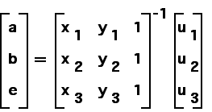
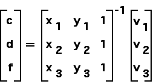
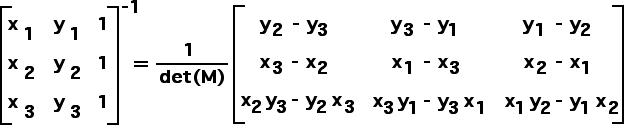

Finding IFS Rules from Images of Points
Background: Explicit Solution
From

and

we see that to find a, b, c, d, e, and f it suffices to invert the coefficient matrix
M
.
Standard inverion gives

Return to
Background
.